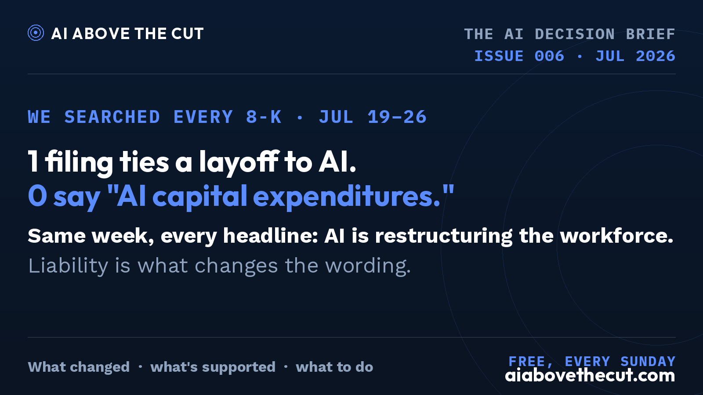
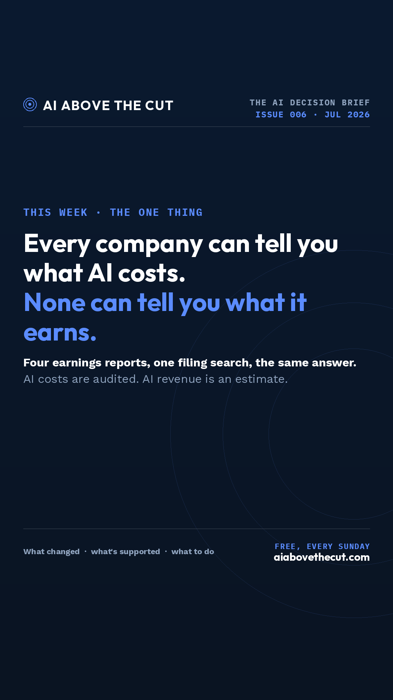

AI Above the Cut — 2026-07-26
2026-07-26_filing-count_x-landscape.png · 1600×900

ALT: Wide dark navy card. AI Above the Cut, issue 006 · jul 2026. Headline: “1 filing ties a layoff to AI. 0 say "AI capital expenditures."” Below it: “Same week, every headline: AI is restructuring the workforce. Liability is what changes the wording.” Footer: free, every sunday, aiabovethecut.com.2026-07-26_one-thing_ig-story.png · 1080×1920

ALT: Vertical story dark navy card. AI Above the Cut, issue 006 · jul 2026. Headline: “Every company can tell you what AI costs. None can tell you what it earns.” Below it: “Four earnings reports, one filing search, the same answer. AI costs are audited. AI revenue is an estimate.” Footer: free, every sunday, aiabovethecut.com.